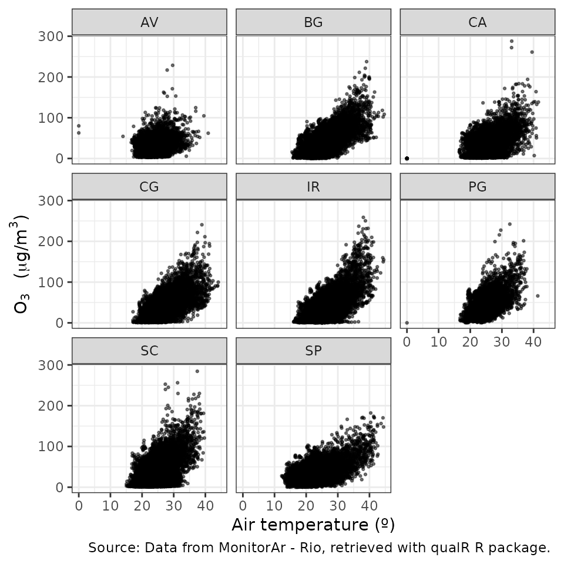

vignettes/qualr.Rmd
qualr.RmdBoth the State of São Paulo and Rio de Janeiro have one of the most extensive air quality stations network in South America. CETESB QUALAR System provide to the user the air quality data from the State of São Paulo. QUALAR System limits the download to one parameter from one air station for one year in a simple query (three parameter in advance query). The data can have missing hours (e.g. due to calibration), the decimal separator is “,”, and the output is a CSV file. data.rio hosts the air quality information from Monitor Ar Program. It is not an user-friendly API and the data needs the same preprocessor as the data from QUALAR System.
qualR surpasses these limitations and brings to your R session ready-to use data frames with the information of air quality station from the State of São Paulo and the city of Rio de Janeiro.
qualR has the following functions:
cetesb_retrieve_param: Download a list of different parameter from one air quality station (AQS) from CETESB QUALAR System.cetesb_retrieve_pol: Download criteria pollutants from one AQS from CETESB QUALAR System.cetesb_retrieve_met: Download meteorological parameters from one AQS from CETESB QUALAR System.cetesb_retrieve_met_pol: Download meteorological parameters and criteria pollutants from one AQS from CETESB QUALAR System.monitor_ar_retrieve_param: Download a list of different parameters from MonitorAr - Rio program.monitor_ar_retrieve_pol: Download criteria pollutants from one AQS from MonitorAr - Rio program.monitor_ar_retrieve_met: Download meteorological parameters from one AQS from MonitorAr - Rio program.monitor_ar_retrieve_met_pol: Download meteorological parameters and criteria pollutants from one AQS from MonitorAr - Rio Program.In this example we want to download one year PM10 concentration from an air quality station located in Rio de Janeiro downtown. We need to do the following:
library(qualR)
monitor_ar_aqs
#> name code lon lat x_utm_sirgas2000
#> 1 ESTACAO PEDRA DE GUARATIBA PG -43.62901 -23.00438 640506.0
#> 2 ESTACAO BANGU BG -43.47107 -22.88791 656828.8
#> 3 ESTACAO CAMPO GRANDE CG -43.55652 -22.88625 648064.5
#> 4 ESTACAO IRAJA IR -43.32684 -22.83162 671696.6
#> 5 ESTACAO COPACABANA AV -43.18048 -22.96500 686537.0
#> 6 ESTACAO TIJUCA SP -43.23266 -22.92492 681240.2
#> 7 ESTACAO SAO CRISTOVAO SC -43.22175 -22.89777 682395.8
#> 8 ESTACAO CENTRO CA -43.17815 -22.90834 686853.7
#> y_utm_sirgas2000
#> 1 7455338
#> 2 7468075
#> 3 7468346
#> 4 7474147
#> 5 7459198
#> 6 7463703
#> 7 7466695
#> 8 7465470
monitor_ar_param
#> code name units
#> 1 SO2 Dioxido de enxofre ug/m3
#> 2 NO2 Dioxido de nitrogenio ug/m3
#> 3 NO Monoxido de Nitrogenio ug/m3
#> 4 NOx Oxidos de nitrogenio ug/m3
#> 5 HCNM Hidrocarbonetos Totais menos Metano ppm
#> 6 HCT Hidrocarbonetos Totais ppm
#> 7 CH4 Metano ug/m3
#> 8 CO Monoxido de Carbono ppm
#> 9 O3 Ozonio ug/m3
#> 10 PM10 Particulas Inalaveis ug/m3
#> 11 PM2_5 Particulas Inalaveis Finas ug/m3
#> 12 Chuva Precipitacao Pluviometrica mm
#> 13 Pres Pressao Atmosferica mbar
#> 14 RS Radiacao Solar W/m2
#> 15 Temp Temperatura ºC
#> 16 UR Umidade Relativa do Ar %
#> 17 Dir_Vento Direcao do Vento º
#> 18 Vel_Vento Velocidade do Vento m/scode is CA (Estação Centro), and PM10 code is PM10. So we use the function monitor_ar_retrieve_param().
rj_centro <- monitor_ar_retrieve_param(start_date = "01/01/2019",
end_date = "31/12/2019",
aqs_code = "CA",
parameters = "PM10")
#> Your query is:
#> Parameter: PM10
#> Air quality station: ESTACAO CENTRO
#> Period: From 01/01/2019 to 31/12/2019
#> Succesful request
#> Downloading PM10
#> Padding out missing dates with NA
head(rj_centro)
#> date pm10 aqs
#> 1 2018-12-31 22:30:00 51 CA
#> 2 2018-12-31 23:30:00 73 CA
#> 3 2019-01-01 00:30:00 119 CA
#> 4 2019-01-01 01:30:00 92 CA
#> 5 2019-01-01 02:30:00 57 CA
#> 6 2019-01-01 03:30:00 43 CA
to_dwld <- c("PM10", "Vel_Vento")
rj_ca_params <- monitor_ar_retrieve_param(start_date = "01/01/2019",
end_date = "31/12/2019",
aqs_code = "CA",
parameters = to_dwld)
#> Your query is:
#> Parameter: PM10, Vel_Vento
#> Air quality station: ESTACAO CENTRO
#> Period: From 01/01/2019 to 31/12/2019
#> Succesful request
#> Downloading PM10 Vel_Vento
#> Padding out missing dates with NA
head(rj_ca_params)
#> date pm10 ws aqs
#> 1 2018-12-31 22:30:00 51 0.85 CA
#> 2 2018-12-31 23:30:00 73 0.45 CA
#> 3 2019-01-01 00:30:00 119 0.53 CA
#> 4 2019-01-01 01:30:00 92 0.45 CA
#> 5 2019-01-01 02:30:00 57 0.25 CA
#> 6 2019-01-01 03:30:00 43 0.53 CA
plot(rj_ca_params$ws, rj_ca_params$pm10,
xlab = "Wind speed (m/s)",
ylab = "",
xlim = c(0,4),
ylim = c(0,120))
mtext(expression(PM[10]~" ("*mu*"g/m"^3*")"), side = 2, line = 2.5)tidyverse
tidyverse is a powerful collection of R package. Here is an example using purrrto download data from multiple stations and ggplot2to visualize the relation between Ozone and air temperature. As we know Ozone is formed by photochemical reaction which means the participation of solar radiation.
library(qualR)
library(purrr)
# Retrieve data from all stations in Rio
rj_params <- purrr::map_dfr(.x = qualR::monitor_ar_aqs$code,
.f = monitor_ar_retrieve_param,
start_date = "01/01/2020",
end_date = "31/12/2020",
parameters = c("O3", "Temp")
)
#> Your query is:
#> Parameter: O3, Temp
#> Air quality station: ESTACAO PEDRA DE GUARATIBA
#> Period: From 01/01/2020 to 31/12/2020
#> Succesful request
#> Downloading O3 Temp
#> Padding out missing dates with NA
#> Your query is:
#> Parameter: O3, Temp
#> Air quality station: ESTACAO BANGU
#> Period: From 01/01/2020 to 31/12/2020
#> Succesful request
#> Downloading O3 Temp
#> Padding out missing dates with NA
#> Your query is:
#> Parameter: O3, Temp
#> Air quality station: ESTACAO CAMPO GRANDE
#> Period: From 01/01/2020 to 31/12/2020
#> Succesful request
#> Downloading O3 Temp
#> Padding out missing dates with NA
#> Your query is:
#> Parameter: O3, Temp
#> Air quality station: ESTACAO IRAJA
#> Period: From 01/01/2020 to 31/12/2020
#> Succesful request
#> Downloading O3 Temp
#> Padding out missing dates with NA
#> Your query is:
#> Parameter: O3, Temp
#> Air quality station: ESTACAO COPACABANA
#> Period: From 01/01/2020 to 31/12/2020
#> Succesful request
#> Downloading O3 Temp
#> Padding out missing dates with NA
#> Your query is:
#> Parameter: O3, Temp
#> Air quality station: ESTACAO TIJUCA
#> Period: From 01/01/2020 to 31/12/2020
#> Succesful request
#> Downloading O3 Temp
#> Padding out missing dates with NA
#> Your query is:
#> Parameter: O3, Temp
#> Air quality station: ESTACAO SAO CRISTOVAO
#> Period: From 01/01/2020 to 31/12/2020
#> Succesful request
#> Downloading O3 Temp
#> Padding out missing dates with NA
#> Your query is:
#> Parameter: O3, Temp
#> Air quality station: ESTACAO CENTRO
#> Period: From 01/01/2020 to 31/12/2020
#> Succesful request
#> Downloading O3 Temp
#> Padding out missing dates with NANow we can visualize all the data simultaneity using ggplot2 facet:
library(magrittr)
#>
#> Attaching package: 'magrittr'
#> The following object is masked from 'package:purrr':
#>
#> set_names
library(ggplot2)
# making the graph with facet
rj_params %>%
ggplot() +
geom_point(aes(x = tc, y = o3), size = 0.5, alpha = 0.5) +
labs(x = "Air temperature (º)",
y = expression(O[3]~" ("*mu*"g/m"^3*")"),
caption = "Source: Data from MonitorAr - Rio, retrieved with qualR R package. "
)+
theme_bw()+
facet_wrap(~aqs)
#> Warning: Removed 12455 rows containing missing values (geom_point).
PS: Special thanks to [@beatrizmilz](https://github.com/beatrizmilz) for inspiring this example.
openair
qualR functions returns a completed data frame (i.e. missing hours padded out with NA) with a date column in POSIXct. This ensure compatibility with the openairpackage.
Here is the code to use openair timeVariation() function. Note that no preprocessing is needed.
#install.package("openair")
library(openair)
openair::timeVariation(rj_centro, pollutant = "pm10")To use cetesb_retrieve you first need to create an account in CETESB QUALAR System. The cetesb_retrieve functions are similar as monitor_ar_retrieve_param functions, but they require the username and password arguments. Check this section on qualR README to safely configure your user name and password on your R session.
In this example, we download Ozone concentration from an air quality station located at Universidade de São Paulo (USP-Ipen) for August, 2021. 1. Check the station code or name
head(cetesb_aqs, 15)
#> name code lat lon
#> 1 Americana 290 -22.72425 -47.33955
#> 2 Araçatuba 107 -21.18684 -50.43932
#> 3 Araraquara 106 -21.78252 -48.18583
#> 4 Bauru 108 -22.32661 -49.09276
#> 5 Cambuci 90 -23.56771 -46.61227
#> 6 Campinas-Centro 89 -22.90252 -47.05721
#> 7 Campinas-Taquaral 276 -22.87462 -47.05897
#> 8 Campinas-V.União 275 -22.94673 -47.11928
#> 9 Capão Redondo 269 -23.66836 -46.78004
#> 10 Carapicuíba 263 -23.53140 -46.83578
#> 11 Catanduva 248 -21.14194 -48.98308
#> 12 Centro 94 -23.54781 -46.64241
#> 13 Cerqueira César 91 -23.55354 -46.67270
#> 14 Cid.Universitária-USP-Ipen 95 -23.56634 -46.73741
#> 15 Congonhas 73 -23.61632 -46.66347code or abbreviation
head(cetesb_param, 15)
#> name units code
#> 1 BEN (Benzeno) ug/m3 61
#> 2 CO (Monoxido de Carbono) ppm 16
#> 3 DV (Direcao do Vento) º 23
#> 4 DVG (Direcao do Vento Global) º 21
#> 5 ERT (Enxofre Reduzido Total) ppb 19
#> 6 HCNM (Hidrocarbonetos Totais menos Metano) - 59
#> 7 MP10 (Particulas Inalaveis) ug/m3 12
#> 8 MP2.5 (Particulas Inalaveis Finas) ug/m3 57
#> 9 NO (Monoxido de Nitrogenio) ug/m3 17
#> 10 NO2 (Dioxido de Nitrogenio) ug/m3 15
#> 11 NOx (Oxidos de Nitrogenio) ppb 18
#> 12 O3 (Ozonio) ug/m3 63
#> 13 PRESS (Pressao Atmosferica) hPa 29
#> 14 RADG (Radiacao Solar Global) W/m2 26
#> 15 RADUV (Radiacao Ultra-violeta) W/m2 5695 and ozone code is 63. So to retrieve the data we should use the cetesb_retrieve_paramfunction like this:
usp_o3 <- cetesb_retrieve_param(username = my_user,
password = my_password,
parameters = "O3", # or 63
aqs_code = "Cid.Universitaria-USP-Ipen", # or 95
start_date = "01/08/2021",
end_date = "31/08/2021") qualR README for more examples and good practices.qualR and how it works with openair.